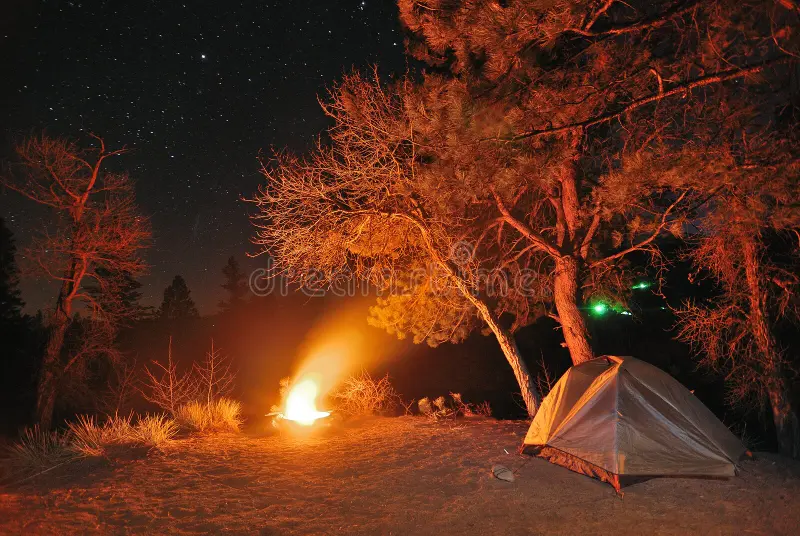
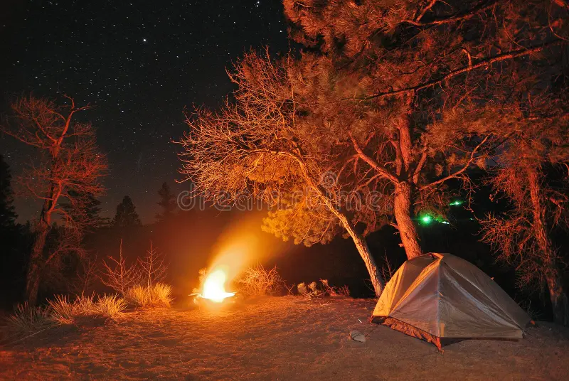
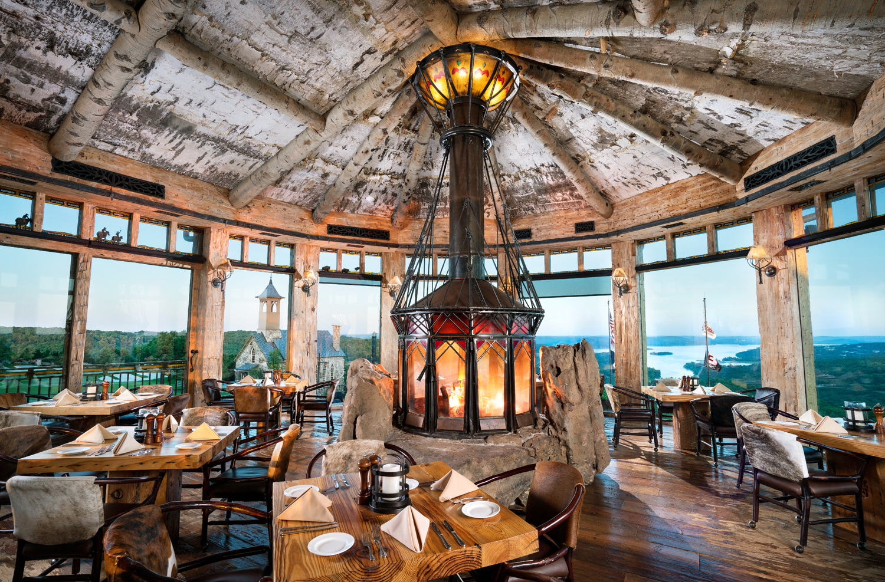
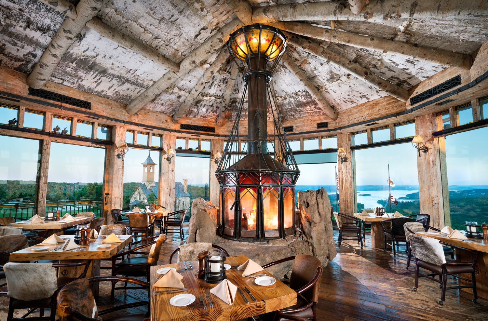

EXPLORE OUR TOURS
Tour 1: Mountain Expedition
Embark on a captivating voyage to distant, enchanting lands, where cultural marvels and breathtaking landscapes converge. Our upcoming tours promise unforgettable experiences, replete with diverse panoramas, authentic flavors, and the creation of indelible memories. Immerse yourself in the heart of each destination, from majestic mountains to pristine beaches, savoring the local cuisine that mirrors its people's vibrant heritage. These journeys offer more than exploration; they provide transformative connections. Engage with local traditions, partake in rituals, and share heartfelt moments with both fellow travelers and welcoming communities. Let your travel aspirations come true as you traverse extraordinary terrains, allowing the essence of each locale to shape your own narrative. With every step, you'll weave a tapestry of wanderlust and self-discovery, forever cherishing the allure of these exotic escapades.
HIGHLIGHTS:
- Guided trekking to the summit
- Scenic views of alpine meadows and glaciers
- Camping under the stars
 

 
